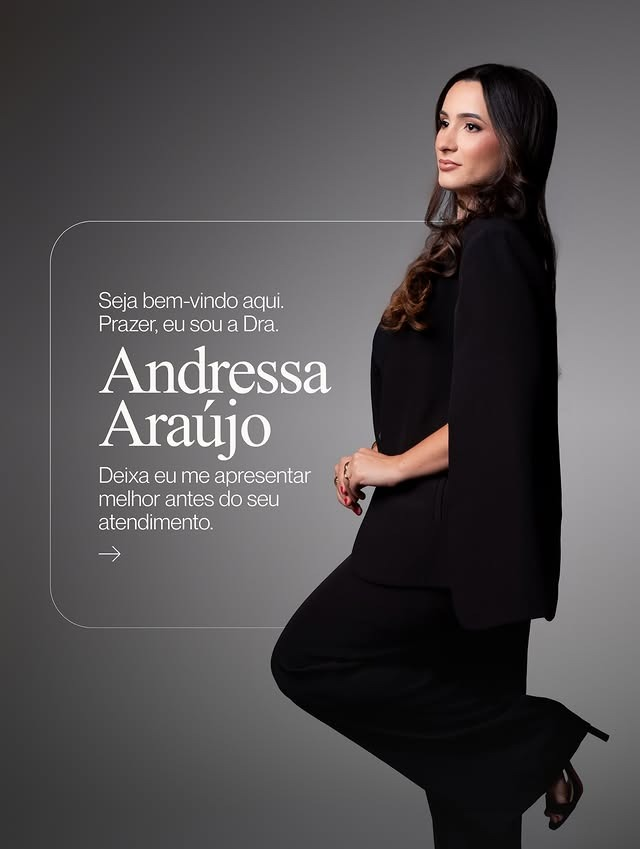

• HARMONIZAÇÃO FACIAL EM MANAUS
Sua autoestima
merece acompanhar
quem você se tornou.
Harmonização facial com naturalidade,
técnica e cuidado individualizado em Manaus.
Atendimento em Manaus • Agendamento pelo WhatsApp
Naturalidade
Valorizar os traços sem descaracterizar você ou criar padrões artificiais.
Planejamento Individual
Cada avaliação começa ouvindo seus objetivos e analisando suas proporções únicas.
Estética Avançada
Abordagem técnica criteriosa, fundamentada em segurança, anatomia e harmonia.
O que você gostaria de valorizar?
Cada rosto possui sua história e proporções singulares. Escolha o aspecto que você deseja harmonizar e converse sobre as possibilidades:
Harmonia Facial
Para quem percebe que alguns pontos do rosto poderiam ganhar mais equilíbrio, sustentação e definição sem exageros.
Lábios e Contorno
Para quem busca melhorar proporção, hidratação profunda, contorno labial ou corrigir pequenas assimetrias mantendo a leveza e naturalidade.
Rejuvenescimento
Para quem deseja suavizar marcas de expressão, aspecto de cansaço e sinais que já não representam como você se sente e se posiciona hoje.
Não é sobre mudar seu rosto. É sobre fazer você se reconhecer ainda mais nele.
A proposta do atendimento é acolher seus incômodos, apresentar possibilidades realistas e buscar o equilíbrio perfeito sem apagar aquilo que torna sua expressão única e marcante.
Procedimentos com Foco em Técnica e Harmonia
Cada indicação é planejada exclusivamente após uma avaliação detalhada dos seus objetivos e características individuais.
Preenchimento & Harmonização Facial
Para quem busca:
Definição sutil de mandíbula, malar, mento ou têmporas, restabelecendo pontos de sustentação e volumetria anatômica com ácido hialurônico.
Bioestimuladores de Colágeno
Para quem busca:
Melhora progressiva da qualidade, densidade e firmeza da pele, combatendo a flacidez tecidual de forma duradoura e natural.
Toxina Botulínica (Preventiva & Reparadora)
Para quem busca:
Suavização delicada de linhas de expressão na testa, glabela e pés de galinha, mantendo a naturalidade da mímica facial sem efeito congelado.
Preenchimento Labial & Rinomodelação
Para quem busca:
Contorno, hidratação ou volume labial harmônico e refinamento sutil do dorso ou ponta nasal sem intervenções cirúrgicas agressivas.
Não sabe qual procedimento faz mais sentido para você?
Você não precisa saber os nomes técnicos antes da sua avaliação. O primeiro passo é entender o que você deseja valorizar.
Sua Avaliação em 3 Etapas
Um processo claro, transparente e sem pressão para que você se sinta totalmente confiante e segura.
Primeiro Contato
Você envia uma mensagem contando brevemente o que gostaria de cuidar e nossa equipe verifica os horários e datas disponíveis em Manaus.
Avaliação Individual
No consultório, a Dra. Andressa conhece suas expectativas, analisa minuciosamente a anatomia do seu rosto e define possibilidades terapêuticas.
Orientação & Decisão
Você recebe explicações completas sobre indicações, produtos, etapas e cuidados antes de qualquer decisão. Total liberdade e segurança.
Dra. Maria Andressa Araújo
Fisioterapeuta • Estética Avançada & Harmonização Facial
Sua atuação une um olhar cuidadoso e sensível para a estética, planejamento individual e a valorização intransigente da naturalidade em cada atendimento.
Com sólida fundamentação anatômica e técnica contínua, o foco é proporcionar procedimentos seguros, refinados e harmoniosos, permitindo que sua beleza evolua sem perder sua essência.
Naturalidade que você consegue perceber — sem apagar sua identidade.
A verdadeira sofisticação na estética avançada está naquilo que as pessoas admiram sem conseguir apontar onde houve intervenção.
Equilíbrio de Perfil & Terço Inferior
Definição & Hidratação Labial
Descanso do Olhar & Suavização
* Nota ético-profissional: Cada organismo e anatomia possui características biológicas exclusivas. Os resultados variam individualmente e dependem da avaliação prévia em consultório.
Experiências de Quem Já Passou pelo Atendimento
O carinho, a tranquilidade e a confiança construídos em cada consulta individualizada.
“Eu tinha muito receio de fazer qualquer procedimento e ficar com o rosto artificial. A Dra. Andressa teve uma paciência incrível na avaliação, explicou cada detalhe e o resultado ficou extremamente natural. Me sinto renovada!”
“O atendimento é impecável do início ao fim. O consultório é super acolhedor e a Dra. Andressa passa muita segurança. Fiz preenchimento labial e ficou exatamente como eu sonhava: delicado e hidratado.”
“A sensação de me olhar no espelho e me reconhecer, mas sem aquele ar de cansaço diário, não tem preço. Trabalho com atendimento ao público e todo mundo elogiou sem saber o que eu tinha feito.”
Um ambiente preparado para receber você com conforto e privacidade
Nosso espaço em Manaus foi planejado para oferecer uma experiência acolhedora, pontual e discreta, onde cada minuto é dedicado exclusivamente ao seu bem-estar.
Rigorosa Biossegurança
Protocolos rigorosos de higiene e materiais descartáveis de alto padrão.
Atendimento com Hora Marcada
Sem filas ou salas de espera cheias. Respeito total ao seu tempo e privacidade.
Localização Acessível em Manaus
Fácil acesso, ambiente climatizado e suporte contínuo antes e após o atendimento.
Atendimento Especializado em Manaus
Dúvidas Frequentes
Transparência e clareza sobre como funciona o atendimento e o planejamento do seu tratamento.
A avaliação presencial é o passo fundamental. Nela, a Dra. Andressa analisa suas proporções faciais, mímica muscular, qualidade de pele e ouve seus objetivos para desenhar um plano estritamente individualizado.
Sim! Você pode entrar em contato diretamente pelo WhatsApp para tirar dúvidas sobre como funciona a consulta, verificar disponibilidade de horários e receber as orientações iniciais com total tranquilidade.
A naturalidade é o pilar central da filosofia de atendimento da Dra. Andressa. O objetivo nunca é transformar você em outra pessoa, mas sim valorizar seus próprios traços, respeitando as proporções anatômicas e a sua idade biológica.
É uma consulta detalhada onde é realizado o mapeamento facial, histórico de saúde e alinhamento de expectativas. A Dra. Andressa explica detalhadamente cada possibilidade para que você tome decisões com clareza e segurança.
O atendimento é realizado em consultório estruturado em Manaus/AM, com ambiente climatizado, estacionamento e total privacidade. A localização exata e mapa de acesso são enviados na confirmação do seu horário.
Basta clicar em qualquer botão de WhatsApp nesta página ou entrar em contato pelo número (92) 98599-8869 para verificar as datas disponíveis e agendar sua avaliação.
Sua autoestima merece acompanhar a mulher que você se tornou.
Comece por uma avaliação individualizada e entenda quais possibilidades fazem sentido para valorizar seus traços com segurança e naturalidade em Manaus.
Quero agendar minha avaliação